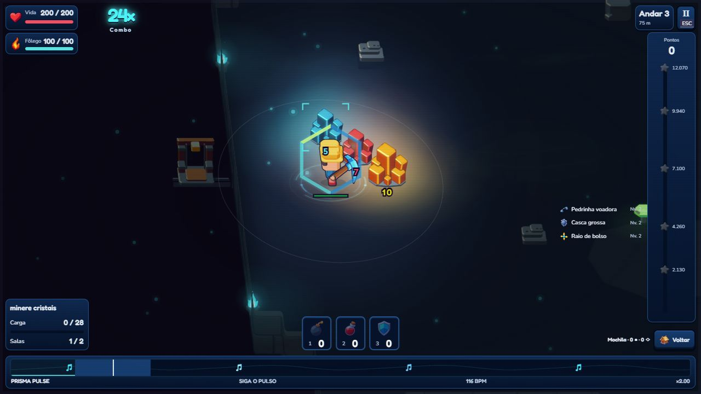

Um novo jeito de olhar para as cavernas
O mapa mudou. As novas expedições usam salas conectadas e uma geração mais enxuta, com luz, materiais e detalhes próprios de cada bioma. As arenas também ganharam espaço para as mecânicas dos chefes.

O trabalho visual passou por líquidos, sombras, fontes de luz e partículas. A intenção foi dar presença a cada ambiente sem trocar a identidade do jogo.
O Místico ganhou fogo de verdade na apresentação
As miragens deixam um rastro de chamas. Na fase de cabeça, a mira antecede uma coluna de fogo que cresce pelo caminho. O efeito foi refinado em várias passagens: base discreta, transparência, chamas mais lentas, partículas luminosas e luz quente no chão.
As regras de dano e os avisos continuam separados do acabamento visual.

Encontros com identidade própria
- Geodo: coroa fraturável, onda em leque e corpo/cristais como obstáculos.
- Matriarca Raiz: cipó elástico, raízes e ovos de seiva que podem soltar morcegos.
- Soberano Micelial: espiral no ritmo, esporos e cogumelos com reação elástica.
- Barão Cenoura: pancada mais rápida, direção do golpe mais clara e a mecânica dos filhotes preservada.
Minerador e progressão
O minerador ficou mais nítido na caverna. A picareta foi alinhada nas vistas esquerda e frontal, mantendo as posições já aprovadas.
A picareta e a vida passaram por um lote de balanceamento: ganhos maiores no começo e incrementos menores nos níveis posteriores. Os custos e os limites atuais foram mantidos. Ainda quero ouvir como essa curva se comporta nas partidas de vocês.
Otimização sem abrir mão do visual
Reaproveitamos buscas de caminho, reduzimos medições repetidas da interface, ajustamos o cache de animações e a gravação das grades do save. O cenário agora pode preparar trechos estáticos em segundo plano, com prioridade para o que está aparecendo na tela.
Nas novas cavernas comuns, a quantidade de salas caiu de 30 para 18, preservando o tamanho dos salões. Mapas antigos salvos mantêm sua estrutura.
Essas mudanças reduzem trabalho repetido. Não significam uma promessa de FPS fixo em todos os computadores: o desempenho continua sendo acompanhado.
O que continua disponível
Sete biomas, 35 andares, Abismo, cartas combináveis e dez pets com habilidades e metas próprias. Os companheiros chegaram na atualização anterior; continuam parte da preparação no refúgio.
Valeu por acompanhar!
Se puder testar, me conte: o ataque do chefe foi fácil de entender? Os biomas estão com cara própria? Em qual trecho o jogo perdeu fluidez? Esse retorno ajuda a decidir a próxima rodada.
Obrigado a quem joga, aponta problemas e ajuda o GemVenture a melhorar.